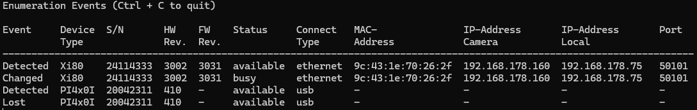
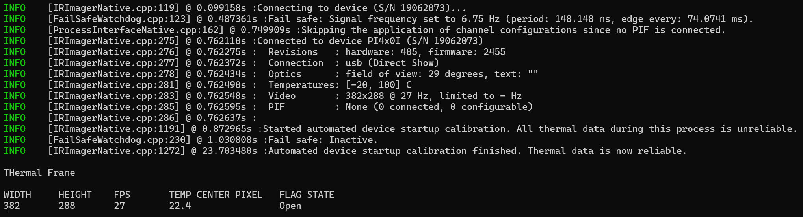
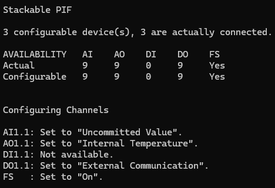
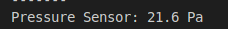
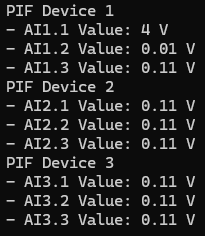
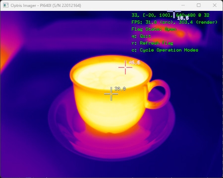

|
Thermal Camera SDK 10.1.0
SDK for Optris Thermal Cameras
|
|
Thermal Camera SDK 10.1.0
SDK for Optris Thermal Cameras
|
On Windows the installer copied the source code of the examples to your Documents folder. On Linux you have to manually copy them from the installation directory to a place in your Home folder where you can edit them as you please.
<SDK Install Directory>\examples folder as well. Copy it from there, if messed up the examples in the Documents folder too much.The examples folder contains a directory for each supported programming language. In them you can find the same examples. Only the Simple View example has a slightly different feature set across the different languages.
Please refer to the Toolchains section of the Start Developing chapter to get detailed instructions on how to install all the required tools to compile and run the examples.
This example illustrates how to use the EnumerationManager. The EnumerationManager allows you to detect devices that are currently attached to your computer. The example continuously lists events indicating newly attached or removed devices.
You can quit the program at any time using Ctrl + C.

EnumerationManager can currently only detect devices attached to your computer via USB.Please refer to its respective README.md for details on how to compile and to start the application.
The purpose of this example is to show the minimum amount of code required to get thermal data from a device. To do this, it defines the class SimpleImagerClient which is derived from the IRImagerClient. It is used to observe the IRImager instance that is connected to your device. The SimpleImagerClient does not extensively process the thermal data but displays the dimensions of the thermal frame, the frame rate, the temperature of the center pixel in °C and the current state of the internal shutter flag of the device.
You can quit the program at any time using Ctrl + C.

EnumerationManager to locate a suitable device on the USB port and connect to it.Please refer to its respective README.md for details on how to build to start the application.
This example is based on the Minimal example but also shows some ways to access and configure the Process Interface (PIF).
The configuration of the PIF is grouped in the configurePif() method. It checks which PIF device is connected and, dependent on the available inputs and outputs, sets these following modes for the first pin of each channel:
| Channel | (DeviceIndex,PinIndex) | Mode |
|---|---|---|
| Analog input (AI) | [0, 0] | Uncommitted Value |
| Analog output (AO) | [0, 0] | Internal Temperature |
| Digital input (DI) | [0, 0] | Flag Control |
| Digital output (DO) | [0, 0] | External Communication |
| Dedicated FailSave (FS) | [0, 0] | On |
The screenshot below shows the output for a Xi410 with three connected "stackable" PIFs:

The following sections explain the settings of each mode in this example in greater detail.
For the analog input, the Uncommitted Value mode was selected for this example. It simulates that a pressure sensor is connected to the input and that its voltage level reflects the current pressure. The unit is set to "Pa" and the offset to 0. With a gain of 0.1 this means that a voltage of 2.16 V translates into 21.6 Pa. Every time the input value changes it will be made available via the onPifUncommittedValue(), which in this example just prints the value.

For the analog output, the Internal Temperature mode was selected for this example. With a gain of 0.1 and a offset of 0, this means that a internal temperature of 34.5 °C would translate into 3.45 V on the pin.
For the digital input, the Flag Control mode was selected for this example. Since the parameter openIfLow is set to true, the flag is open if the input voltage is below 2 V.
For the digital input, the External Communication mode was selected for this example. You can set the output to high or low using the setDoValue() method.
If available, this example turns the dedicated fail safe pin on. The fail safe remains active as long as the camera and the processing chain of the SDK is working correctly. While active the dedicated fail safe pin outputs a voltage level higher than zero and the LED next to the pin lights up. If inactive, the voltage level will be zero and the LED will be off.
An SDK client can interrupt the all-clear fail safe signal with the help of the interruptFailSafe() method of the IRImager interface.
The direct access of the PIF input values is performed in the onThermalFrame() callback via the FrameMetadata object. Since this example is supposed to be as generic as possible, there are some extra checks to determine how many inputs are actually available. The access happens through the getPifXXValue() method, where XX is either Ai or Di.
This example prints the value of each available channel for every received frame.
Like before, this is what the output for a Xi410 with three "stackable" PIF looks like:

In this screenshot: The AI1.1 is actively used and displays the current input voltage. AI1.2 is pulled to ground but still displays 0,1 V. The other pins are left floating (no voltage connected) and display 0.11 V.
Some important notes:
This is the most elaborate example. It illustrates, at least, how to retrieve thermal frames from your device and how to convert them into false color images. Its feature set varies across the supported programming languages with the C++ version being the most comprehensive one. All three of them define an IRImagerClient child class named IRImagerShow that observes an IRImager instance. Received thermal frames are buffered until a rendering loop converts them into false color images using the ImageBuilder class. The C++ version also illustrates how the ImagerBuilder can be used to locate hot and cold spots and how to calculate the mean temperature within a predefined area. Furthermore, it shows how a MeasurementField can be added.

MeasurementField is a square with an edge length of 20 pixels and located slightly inwards from the upper left corner. It will not be added, if the frame dimensions are too small.The C++ and Python 3 versions expected the serial number of the device to connect to as a command line argument. In this regard they behave like the Minimal example. The C# example offers the menu option Device - Quick Connect instead.
Please refer to its respective README.md for details on how to compile and to start the application.